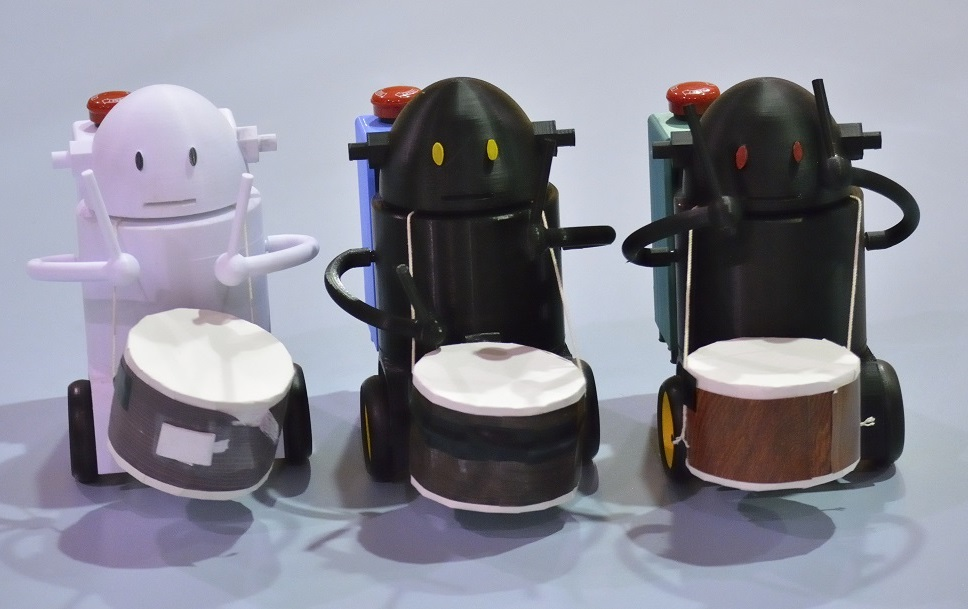

Home
Aチーム全国大会出場

Aチーム「Run・Turn」
Aチーム全国大会出場
2020年度の高専ロボコン「はび☆ロボ自慢」で、Aチーム「Run・Turn」（ランターン）が全国大会に出場することができました。
竿燈を再現！
今年は、新型コロナウイルスにより、自由なロボットを作るという例年とは異なる高専ロボコンでした。
そこで、秋田竿燈まつりをロボットで再現をすべく、大型の倒立振子ロボットを製作しました。
26年ぶりに全国で受賞
結果、竿灯を立たせる制御技術などを評価くださり、東北地区大会では技術賞、全国大会ではローム株式会社より特別賞を頂きました！
全国大会で賞をいただくのは26年ぶりとなります。
2020年度の出場マシンの詳細情報はこちら
ロボコン部とは？
私たちは、NHKが主催する「アイデア対決・全国高等専門学校ロボットコンテスト」に毎年出場している部活です。
一応、学校でのこの部活の正式名称は「ロボットコンテスト」となっているようです。
新入生の方へ
私たちと一緒にロボットを作りませんか？
簡単に説明すると、様々な技術が身につく楽しい部活です。
せっかく、高専に入学したのにロボコンをやらないのはもったいない！
ぜひ、ロボコン部への入部を検討してみてください。
最新の情報は公式Twitterから確認してくださいね。
更新履歴
令和2年度
■[05/26]Webページデザインを大幅変更
■[05/26]HTML5化、レスポンシブデザイン化してスマホ対応
令和元年度
■[07/22]トップページ・部員・機体紹介の更新
平成30年度
■[05/15]トップページ・部員・機体紹介の更新
平成29年度
■[07/04]トップページ・部員・機体紹介の更新
平成28年度
■[08/25]トップページ・部員・機体紹介の更新
平成27年度
■[05/25]トップページ・部員の更新、機体紹介完成
平成26年度
■[02/03]背景の変更
■[01/07]秋田高専ロボコンHP公開(機体紹介未完成)